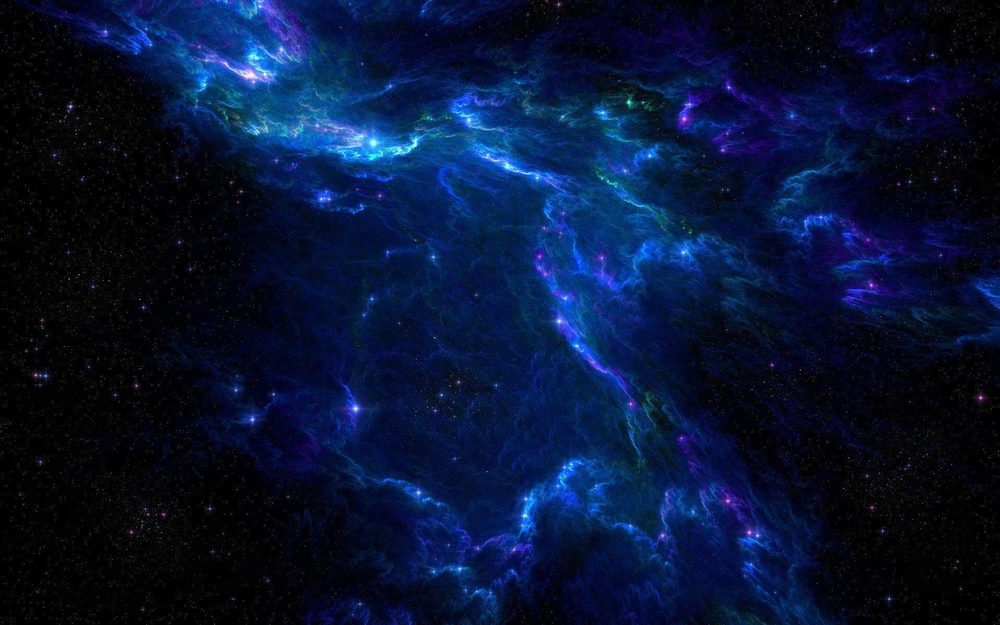

The Mysteries of Dark Matter
Dark matter is one of the most perplexing mysteries in modern astrophysics. Its elusive nature challenges our understanding of the universe and prompts groundbreaking research into its properties and existence. Despite its pervasive influence on cosmic structures, dark matter remains undetectable through conventional means, evading direct observation. Instead, its presence is inferred through gravitational effects on visible matter and light. This enigmatic substance constitutes approximately 27% of the universe's total mass-energy content, vastly outweighing ordinary matter, yet its composition and fundamental characteristics remain unknown. Over the past few decades, various theoretical models have attempted to elucidate the nature of dark matter, ranging from exotic particles beyond the Standard Model of particle physics to modifications of gravity on cosmic scales. Experimental efforts have focused on detecting dark matter particles directly through high-energy collisions or indirectly through their interactions with ordinary matter and radiation. However, despite numerous endeavors, conclusive evidence of dark matter's identity continues to elude scientists. Recent advancements in observational astronomy, gravitational lensing studies, and computer simulations have provided invaluable insights into the distribution and behavior of dark matter in the universe. These investigations have revealed its pivotal role in shaping the large-scale structure of galaxies and galaxy clusters, influencing their formation and evolution over cosmic time scales. Moreover, observations of the cosmic microwave background radiation have provided crucial constraints on the amount and distribution of dark matter in the early universe, shedding light on its properties during the crucial epochs of cosmic evolution. As the quest to unravel the mystery of dark matter continues, interdisciplinary collaborations between astronomers, particle physicists, and cosmologists are becoming increasingly vital. Innovative technologies and experimental techniques are continuously being developed to probe the elusive nature of dark matter, with projects such as the Large Hadron Collider, the Large Synoptic Survey Telescope, and the Dark Energy Survey aiming to uncover its secrets. Furthermore, theoretical frameworks such as supersymmetry and extra dimensions offer tantalizing possibilities for explaining the elusive nature of dark matter, driving theoretical exploration and experimental validation. In conclusion, dark matter stands as a testament to the boundless mysteries of the cosmos, challenging our current understanding of fundamental physics and the nature of reality itself. While the quest to unveil its secrets remains ongoing, the pursuit of knowledge in this frontier of astrophysics promises to revolutionize our comprehension of the universe and our place within it.